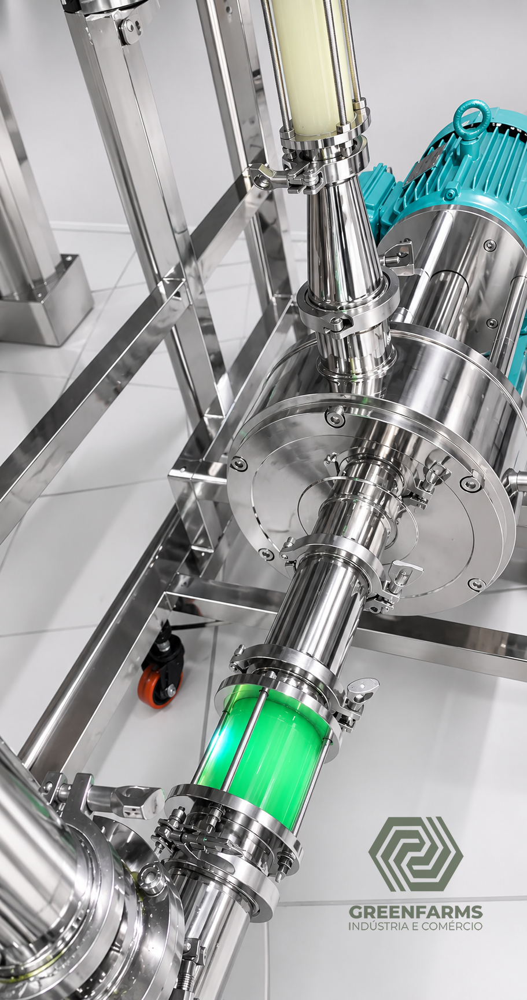
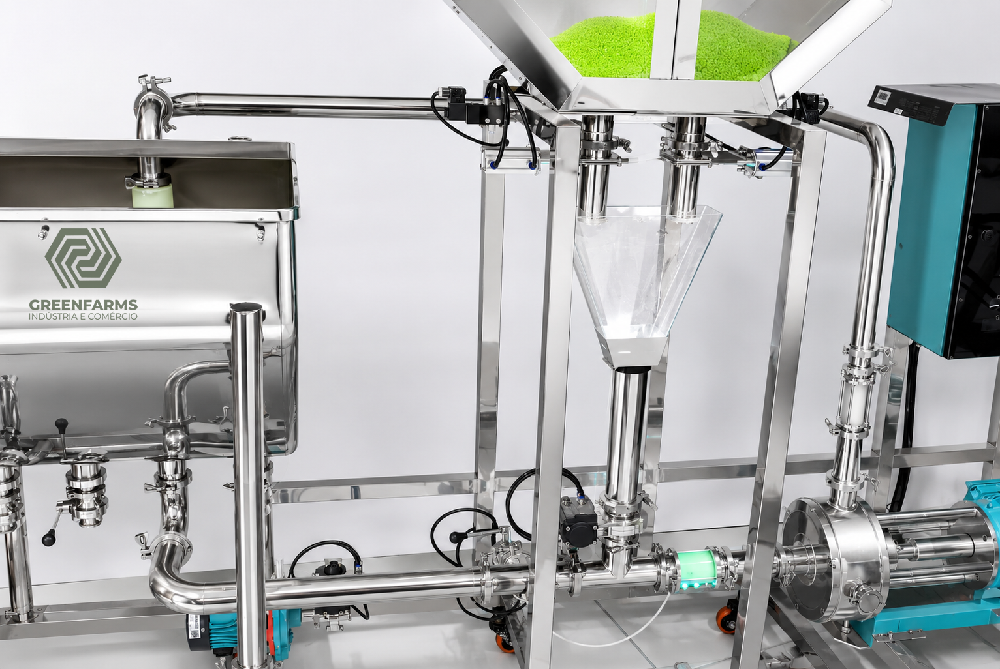
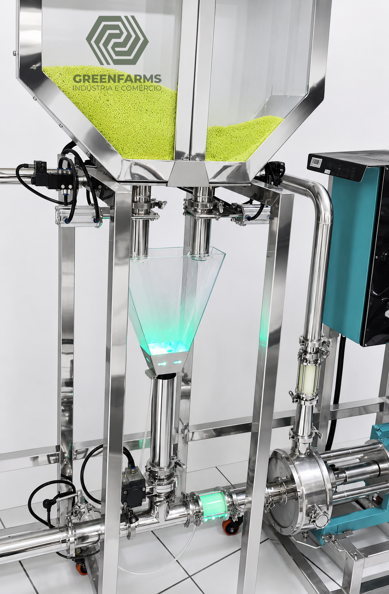

Desenvolvimento Industrial
Plantas Piloto Industriais
A GREENFARMS desenvolve plantas piloto industriais personalizadas, projetadas de acordo com a necessidade específica de cada empresa, processo e aplicação industrial.
O principal objetivo é permitir que indústrias realizem testes, validações, ajustes operacionais e desenvolvimento de produtos em menor escala antes de avançarem para produção industrial de grande capacidade — reduzindo riscos e otimizando investimentos.
Cada planta piloto é concebida respeitando características fundamentais do processo: viscosidade, temperatura, abrasividade, automação, controle sanitário e capacidade produtiva.
Foco de Desenvolvimento
- Engenharia de precisão e flexibilidade operacional
- Sanitização eficiente e automação inteligente
- Robustez industrial com facilidade de manutenção
- Expansão futura prevista em projeto
- Documentação técnica e rastreabilidade
Galeria
Projetos de Plantas Piloto


